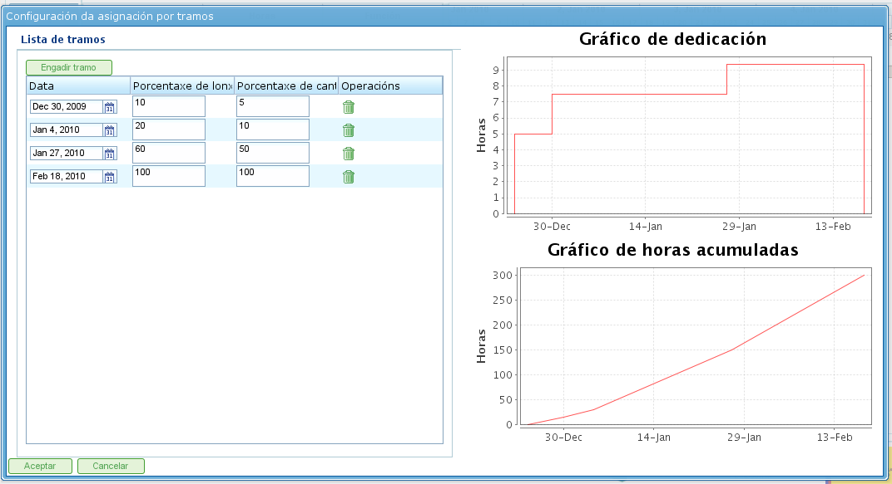

Assegnazione delle Risorse
Contents
L'assegnazione delle risorse è una delle funzionalità più importanti del programma e può essere effettuata in due modi diversi:
- Assegnazione specifica
- Assegnazione generica
Entrambi i tipi di assegnazione sono spiegati nelle sezioni seguenti.
Per eseguire entrambi i tipi di assegnazione delle risorse, sono necessari i seguenti passaggi:
- Andare alla vista di pianificazione di un ordine.
- Fare clic con il pulsante destro del mouse sull'attività da pianificare.

Menu di Assegnazione delle Risorse
- Il programma visualizza una schermata con le seguenti informazioni:
- Elenco dei Criteri da Soddisfare: Per ogni gruppo di ore, viene mostrato un elenco dei criteri richiesti.
- Informazioni sull'Attività: Le date di inizio e fine dell'attività.
- Tipo di Calcolo: Il sistema consente agli utenti di scegliere la strategia per il calcolo delle assegnazioni:
- Calcola il Numero di Ore: Calcola il numero di ore richieste dalle risorse assegnate, data una data di fine e un numero di risorse al giorno.
- Calcola la Data di Fine: Calcola la data di fine dell'attività in base al numero di risorse assegnate all'attività e al numero totale di ore necessarie per completarla.
- Calcola il Numero di Risorse: Calcola il numero di risorse necessarie per completare l'attività entro una data specifica, dato un numero noto di ore per risorsa.
- Assegnazione Consigliata: Questa opzione consente al programma di raccogliere i criteri da soddisfare e il numero totale di ore da tutti i gruppi di ore, e quindi consigliare un'assegnazione generica. Se esiste un'assegnazione precedente, il sistema la elimina e la sostituisce con quella nuova.
- Assegnazioni: Un elenco di assegnazioni effettuate. Questo elenco mostra le assegnazioni generiche (il numero sarà l'elenco dei criteri soddisfatti, e il numero di ore e risorse al giorno). Ogni assegnazione può essere esplicitamente rimossa facendo clic sul pulsante di eliminazione.

Assegnazione delle Risorse
- Gli utenti selezionano "Cerca risorse".
- Il programma visualizza una nuova schermata composta da un albero dei criteri e un elenco di lavoratori che soddisfano i criteri selezionati a destra:

Ricerca di Assegnazione delle Risorse
- Gli utenti possono selezionare:
- Assegnazione Specifica: Consultare la sezione "Assegnazione Specifica" per i dettagli su questa opzione.
- Assegnazione Generica: Consultare la sezione "Assegnazione Generica" per i dettagli su questa opzione.
- Gli utenti selezionano un elenco di criteri (generico) o un elenco di lavoratori (specifico). È possibile effettuare selezioni multiple tenendo premuto il tasto "Ctrl" e facendo clic su ciascun lavoratore/criterio.
- Gli utenti fanno quindi clic sul pulsante "Seleziona". È importante ricordare che se non viene selezionata un'assegnazione generica, gli utenti devono scegliere un lavoratore o una macchina per eseguire l'assegnazione. Se viene selezionata un'assegnazione generica, è sufficiente che gli utenti scelgano uno o più criteri.
- Il programma visualizza quindi i criteri o l'elenco delle risorse selezionati nell'elenco delle assegnazioni nella schermata originale di assegnazione delle risorse.
- Gli utenti devono scegliere le ore o le risorse al giorno, a seconda del metodo di assegnazione utilizzato nel programma.
Assegnazione Specifica
Questa è l'assegnazione specifica di una risorsa a un'attività del progetto. In altre parole, l'utente decide quale lavoratore specifico (per nome e cognome) o macchina deve essere assegnato a un'attività.
L'assegnazione specifica può essere effettuata nella schermata mostrata in questa immagine:

Assegnazione Specifica delle Risorse
Quando una risorsa è specificamente assegnata, il programma crea assegnazioni giornaliere in base alla percentuale di risorse giornaliere assegnate selezionata, dopo averla confrontata con il calendario delle risorse disponibili. Ad esempio, un'assegnazione di 0,5 risorse per un'attività di 32 ore significa che 4 ore al giorno vengono assegnate alla risorsa specifica per completare l'attività (assumendo un calendario lavorativo di 8 ore al giorno).
Assegnazione Specifica di Macchine
L'assegnazione specifica di macchine funziona allo stesso modo dell'assegnazione dei lavoratori. Quando una macchina viene assegnata a un'attività, il sistema memorizza un'assegnazione specifica di ore per la macchina scelta. La differenza principale è che il sistema cerca l'elenco dei lavoratori o criteri assegnati nel momento in cui la macchina viene assegnata:
- Se la macchina ha un elenco di lavoratori assegnati, il programma sceglie tra quelli richiesti dalla macchina, in base al calendario assegnato. Ad esempio, se il calendario della macchina è di 16 ore al giorno e il calendario delle risorse è di 8 ore, vengono assegnate due risorse dall'elenco delle risorse disponibili.
- Se la macchina ha uno o più criteri assegnati, vengono effettuate assegnazioni generiche tra le risorse che soddisfano i criteri assegnati alla macchina.
Assegnazione Generica
L'assegnazione generica avviene quando gli utenti non scelgono specificamente le risorse ma lasciano la decisione al programma, che distribuisce i carichi tra le risorse disponibili dell'azienda.

Assegnazione Generica delle Risorse
Il sistema di assegnazione utilizza le seguenti ipotesi come base:
- Le attività hanno criteri che sono richiesti dalle risorse.
- Le risorse sono configurate per soddisfare i criteri.
Tuttavia, il sistema non fallisce quando i criteri non sono stati assegnati, ma quando tutte le risorse soddisfano il non-requisito dei criteri.
L'algoritmo di assegnazione generica funziona come segue:
- Tutte le risorse e i giorni vengono trattati come contenitori in cui si inseriscono le assegnazioni giornaliere di ore, in base alla capacità massima di assegnazione nel calendario delle attività.
- Il sistema cerca le risorse che soddisfano il criterio.
- Il sistema analizza quali assegnazioni hanno attualmente diverse risorse che soddisfano i criteri.
- Le risorse che soddisfano i criteri vengono scelte tra quelle con sufficiente disponibilità.
- Se non sono disponibili risorse più libere, le assegnazioni vengono effettuate alle risorse con meno disponibilità.
- La sovra-assegnazione delle risorse inizia solo quando tutte le risorse che soddisfano i rispettivi criteri sono assegnate al 100%, fino a raggiungere la quantità totale necessaria per svolgere l'attività.
Assegnazione Generica di Macchine
L'assegnazione generica di macchine funziona allo stesso modo dell'assegnazione dei lavoratori. Ad esempio, quando una macchina viene assegnata a un'attività, il sistema memorizza un'assegnazione generica di ore per tutte le macchine che soddisfano i criteri, come descritto per le risorse in generale. Tuttavia, in aggiunta, il sistema esegue la seguente procedura per le macchine:
- Per tutte le macchine scelte per l'assegnazione generica:
- Raccoglie le informazioni di configurazione della macchina: valore alpha, lavoratori assegnati e criteri.
- Se la macchina ha un elenco assegnato di lavoratori, il programma sceglie il numero richiesto dalla macchina, a seconda del calendario assegnato. Ad esempio, se il calendario della macchina è di 16 ore al giorno e il calendario delle risorse è di 8 ore, il programma assegna due risorse dall'elenco delle risorse disponibili.
- Se la macchina ha uno o più criteri assegnati, il programma effettua assegnazioni generiche tra le risorse che soddisfano i criteri assegnati alla macchina.
Assegnazione Avanzata
Le assegnazioni avanzate consentono agli utenti di progettare assegnazioni che vengono automaticamente eseguite dall'applicazione per personalizzarle. Questa procedura consente agli utenti di scegliere manualmente le ore giornaliere dedicate dalle risorse alle attività assegnate o di definire una funzione che viene applicata all'assegnazione.
I passaggi da seguire per gestire le assegnazioni avanzate sono:
- Andare alla finestra di assegnazione avanzata. Ci sono due modi per accedere alle assegnazioni avanzate:
- Andare a un ordine specifico e cambiare la vista in assegnazione avanzata. In questo caso, verranno mostrate tutte le attività dell'ordine e le risorse assegnate (specifiche e generiche).
- Andare alla finestra di assegnazione delle risorse facendo clic sul pulsante "Assegnazione avanzata". In questo caso, verranno mostrate le assegnazioni che mostrano le risorse (generiche e specifiche) assegnate a un'attività.

Assegnazione Avanzata delle Risorse
- Gli utenti possono scegliere il livello di zoom desiderato:
- Livelli di Zoom Maggiori di Un Giorno: Se gli utenti modificano il valore delle ore assegnate a una settimana, un mese, un quadrimestre o un semestre, il sistema distribuisce le ore linearmente su tutti i giorni nel periodo scelto.
- Zoom Giornaliero: Se gli utenti modificano il valore delle ore assegnate a un giorno, queste ore si applicano solo a quel giorno. Di conseguenza, gli utenti possono decidere quante ore desiderano assegnare al giorno alle risorse dell'attività.
- Gli utenti possono scegliere di progettare una funzione di assegnazione avanzata. Per farlo, gli utenti devono:
- Scegliere la funzione dall'elenco di selezione che appare accanto a ciascuna risorsa e fare clic su "Configura".
- Il sistema visualizza una nuova finestra se la funzione scelta deve essere specificamente configurata. Funzioni supportate:
- Segmenti: Una funzione che consente agli utenti di definire segmenti a cui viene applicata una funzione polinomiale. La funzione per segmento è configurata come segue:
- Data: La data in cui termina il segmento. Se viene stabilito il seguente valore (lunghezza), la data viene calcolata; in alternativa, viene calcolata la lunghezza.
- Definizione della Lunghezza di Ciascun Segmento: Indica quale percentuale della durata dell'attività è necessaria per il segmento.
- Definizione della Quantità di Lavoro: Indica quale percentuale del carico di lavoro si prevede di completare in questo segmento. La quantità di lavoro deve essere incrementale. Ad esempio, se c'è un segmento del 10%, il successivo deve essere più grande (ad esempio, 20%).
- Grafici dei Segmenti e Carichi Accumulati.
- Segmenti: Una funzione che consente agli utenti di definire segmenti a cui viene applicata una funzione polinomiale. La funzione per segmento è configurata come segue:
- Gli utenti fanno quindi clic su "Accetta".
- Il programma memorizza la funzione e la applica alle assegnazioni giornaliere delle risorse.

Configurazione della Funzione Segmento